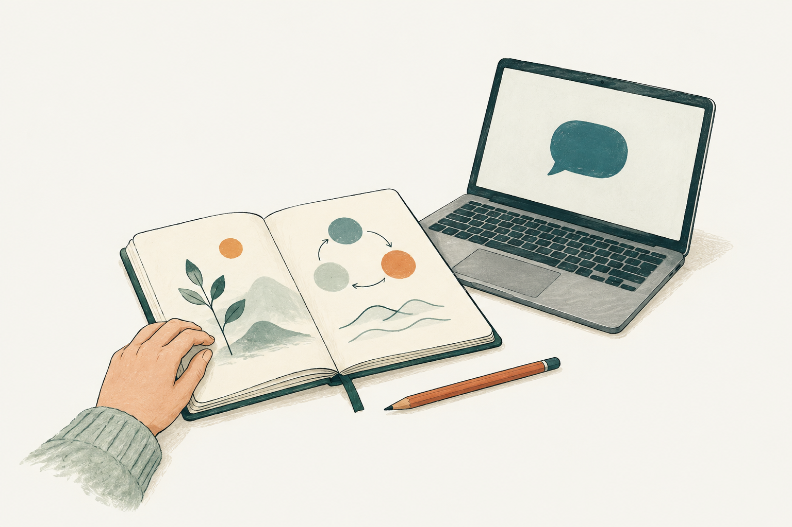
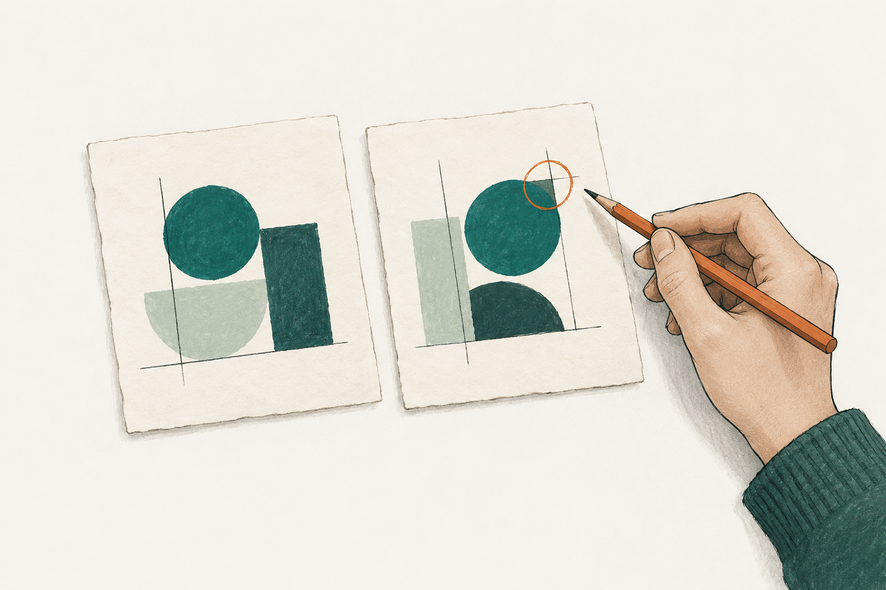
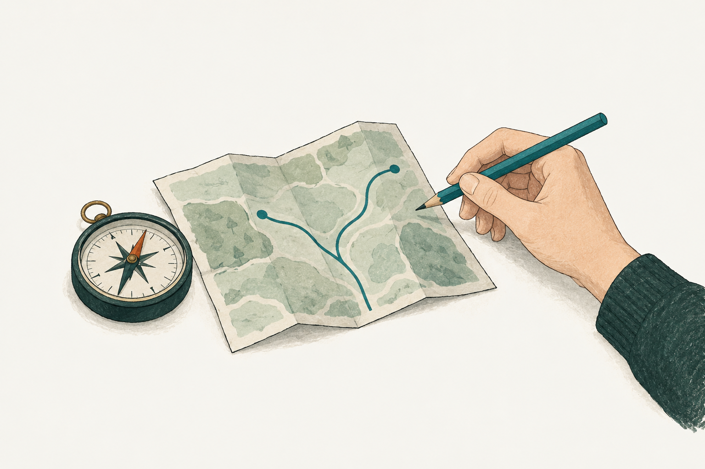

FIRST STEPS / EVERYDAY AI
AIを使い始める、小さな習慣 →
日常の質問、音声入力、背景資料の活用、テーマごとの整理を扱います。小さな成功体験を積み重ね、必要に応じてエージェントへ広げます。
A FIELD GUIDE TO WORKING WITH AI
今、学びたいことから選ぶ。
AIと働くための知識と実践を、5つの入口から。

FIRST STEPS / EVERYDAY AI
日常の質問、音声入力、背景資料の活用、テーマごとの整理を扱います。小さな成功体験を積み重ね、必要に応じてエージェントへ広げます。
AI BASICS & TERMINOLOGY
AI用語15項目を、役割と実務例で理解します。モデルとアプリ、ワークフローとエージェント、SkillsとMCPの関係、情報量と履歴管理も整理します。
EVERYDAY AI & REQUESTS
仕事と日常に使える24の依頼例です。読み取り、要約、ToDo、調査、自己評価、創作を用途別に整理し、資料の渡し方と確認項目も扱います。
PROMPT & DIALOGUE
目的を軸に、役割・条件・例を加える依頼の作り方です。ルールの理由、適用する場面、初稿からの修正まで、具体例とひな形で整理します。
CONTEXT & ANSWER QUALITY
回答を改善するため、指示・資料・道具・評価を整えます。自己レビュー、背景情報の反映、検索、複数エージェントの分担を具体例で扱います。
CONTEXT & JUDGMENT
自分の仕事の情報と判断基準をAIへ渡す方法です。資料の収集、基準の抽出と確認、下書きへの適用、領域ごとの知識、改善の流れを整理します。

THINKING / JUDGMENT & IDEAS
出力を見分ける判断軸、複数のAIを扱う負荷の管理、ゴールから逆算する発想法です。比較学習、思考の外部化、ペルソナを実践につなげます。
JUDGMENT / REVIEW & LEARNING
用途から評価基準を作り、前提と根拠を確かめ、実行後に更新します。AIと人のレビュー分担、理解を深める4つの質問例も扱います。
MINDSET & PRACTICE
情報の扱い方から、変化への向き合い方、目標と仕上げまでを5つの習慣に整理します。AIで作ったページの公開確認や、成果物を磨く観点も扱います。
PRACTICE / AUTOMATION DESIGN
手動で品質を確かめ、タスクを分け、必要な情報だけを揃えます。対話の進め方、半自動化、保留と再検証、知識の参照方法までを整理します。
DOTS / ONGOING RESPONSIBILITY
単発の質問から継続業務へ広げる方法を学びます。連携、優先順位、通知条件、権限を整理し、時間管理・情報収集・分析・制作へ応用します。
DOTS & CONNECTED WORK
メールと手元の資料を横断し、次の行動へつなげるdotsの実践編です。接続する端末の条件、役割別フォルダー、作業の振り分け、音声での依頼を扱います。
DECISIONS & BUSINESS KNOWLEDGE
判断を担うモデルと、業務データの意味を整理する設計を扱います。ハエの神経回路研究、Jev、オントロジー、FDE、完了条件まで具体例でまとめます。

SUBSCRIPTIONS / CHOOSE BY TASK
主力のAIを1つ選び、文章・企画、業務環境、開発、スマートフォンの使いやすさに合わせて候補を比べます。利用枠と総費用も整理します。
GOOGLE AI & TOOLS
Google AI Proを11の用途で整理します。調査、制作、資料学習、開発の使いどころと、サービスごとに分かれる利用枠、契約時の確認点を扱います。
STRATEGY / SUSTAINABLE AI
価格や利用条件の変化に備え、成果を出せる仕組みをつくります。自律ループ、モデルの使い分け、企業・個人の実践力、ローカルAIを体系的に学びます。
SELF-IMPROVEMENT / SKILLS & DATA
自己改善の仕組みと評価、行動と結果をつなぐデータ、仕事の変化への備えを整理します。判断力、原データの保存、複数AIの連携も扱います。
WORK & EXPERIENCE
仕事の工程を見直し、実務経験をAIへの指示と評価へ生かします。初めての仕事での学び方、承認の分担、小さな制作と業務改善も扱います。
AI CHANGE & PREPARATION
AIの変化を捉える軸と、今からできる準備を整理します。現在と予測の分け方、自己改善の概念、情報収集、個人と組織の実践を扱います。
該当する記事はありません。別のキーワードでお試しください。